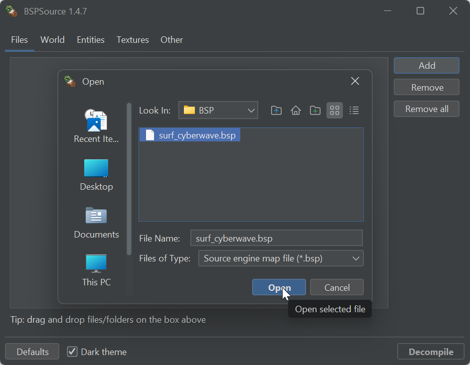
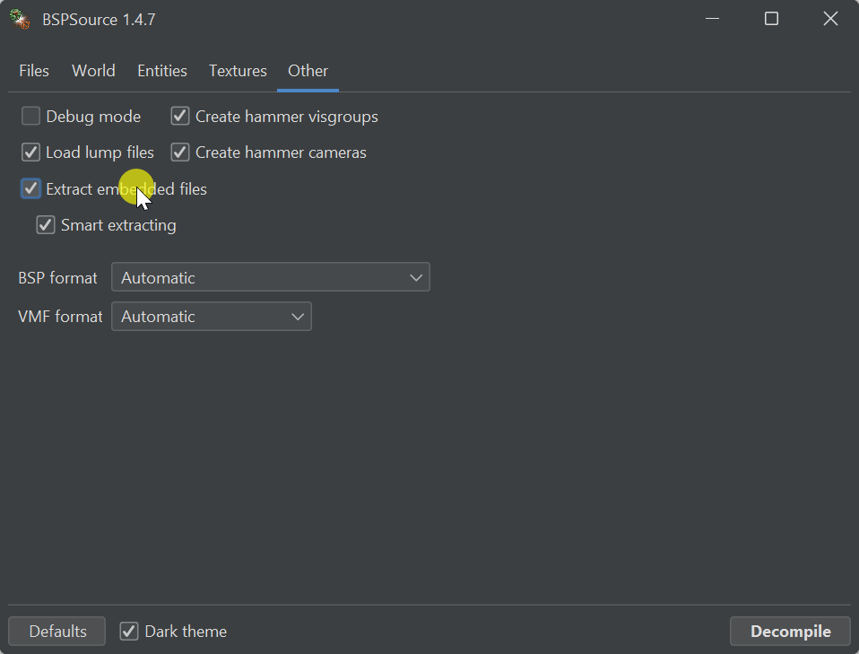
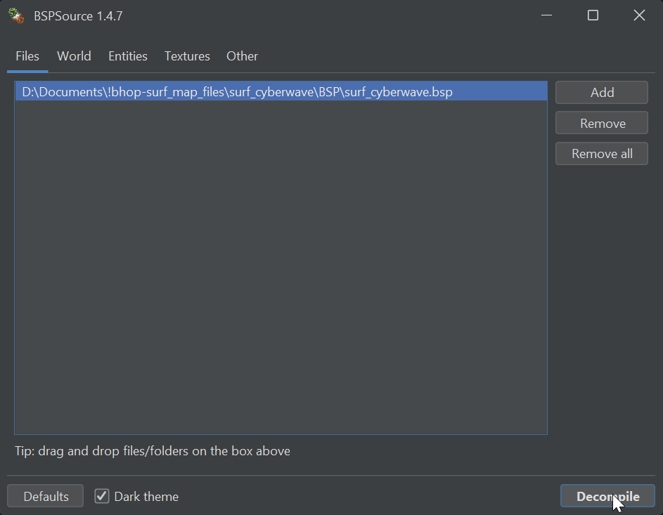

📋 Extract VMF, Textures, and Models from BSP
- Step 1: Download the BSP file of the map you want to port.
-
Step 2: Download BSPSource
-
Step 3: Add your [MAP].bsp file to BSPSource.

-
Step 4: In the "Other" tab, enable "Extract embedded files".

-
Step 5: Click "Decompile".
